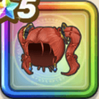

ゼシカの髪留
攻略班 9.0点 / ドラゴン系への耐性+5%水系への耐性+5%物質系への耐性+5%水系への耐性+5%【魔法戦士】スキルの体技ダメージ+4%【晴れ】ドルマ属性斬撃・体技ダメージ+3%ドルマ属性斬撃・体技ダメージ+8％
くわしい特徴
【レベル別習得スキル】 Lv1ドラゴン系への耐性+5% Lv8水系への耐性+5% Lv10【魔法戦士】スキルの体技ダメージ+4% Lv12【晴れ】ドルマ属性斬撃・体技ダメージ+3% Lv12ドルマ属性斬撃・体技ダメージ+8％ Lv15守備力+7 Lv18物質系への耐性+5% Lv20【魔法戦士】すべての状態異常成功率+3% Lv23水系への耐性+5% Lv25きようさ+10 【限界突破スキル】 1凸攻撃力+10 2凸すばやさ+12 3凸守備力+10 4凸さいだいHP+12